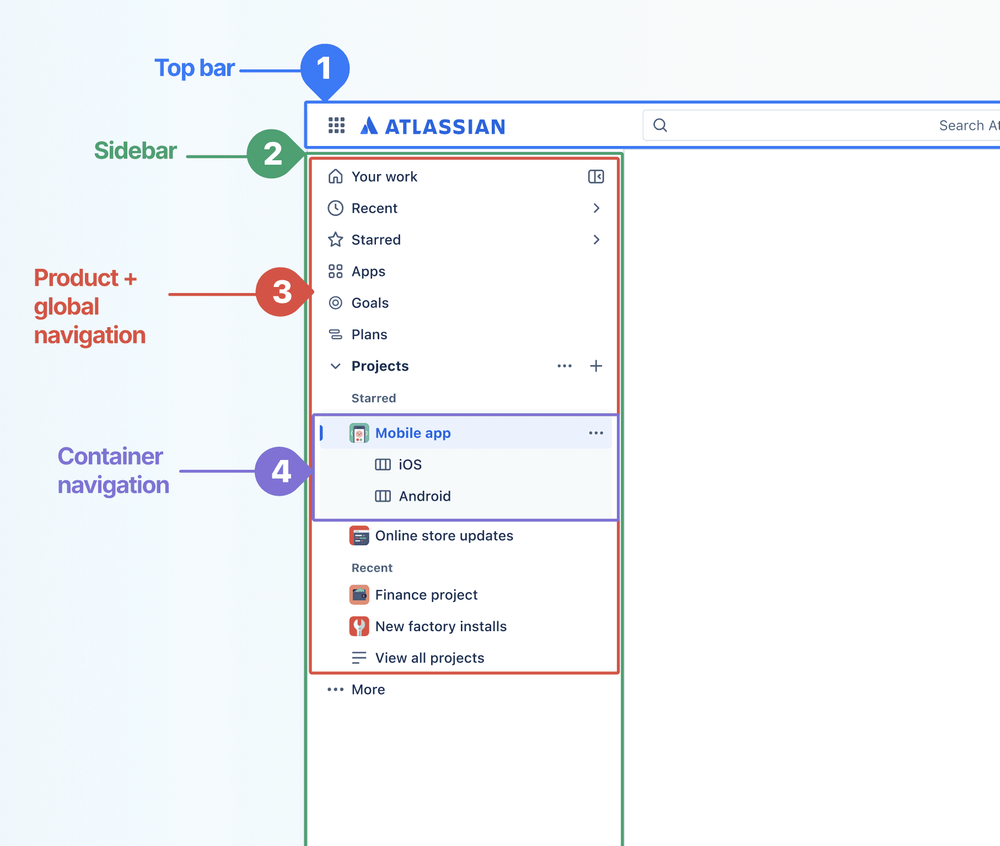
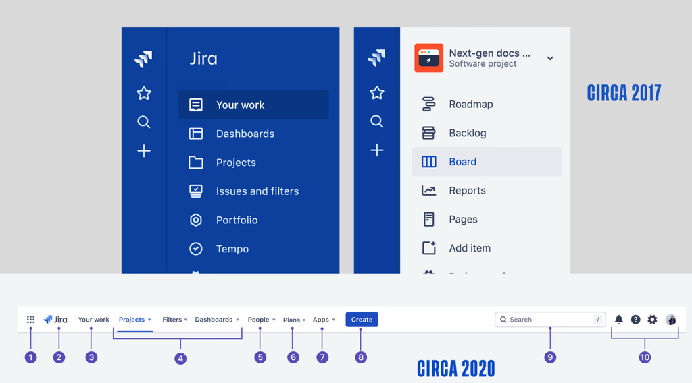
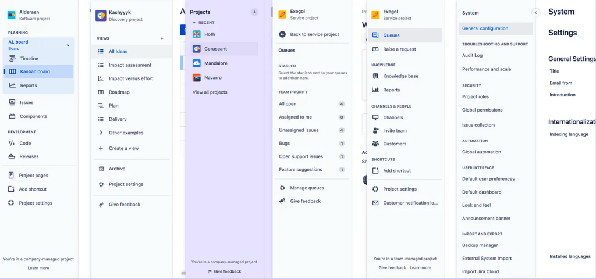
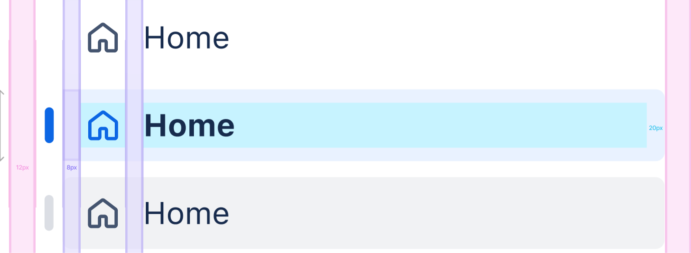
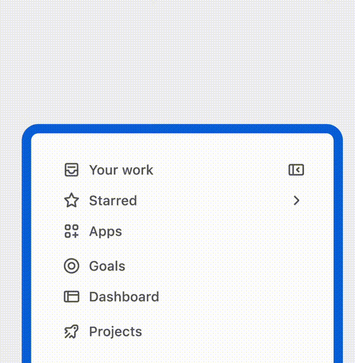
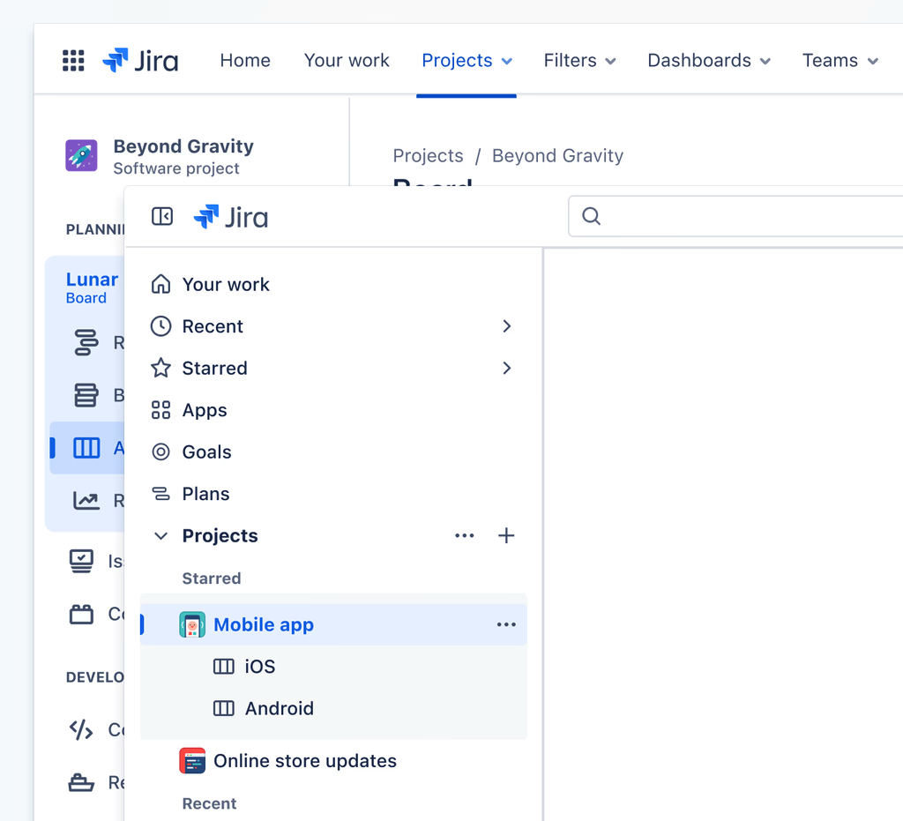
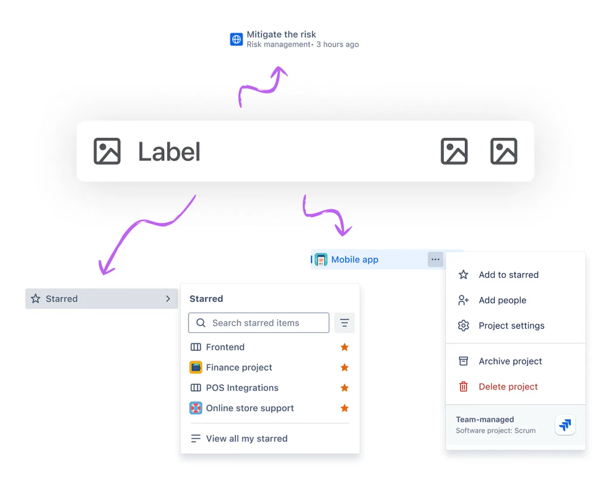

How a 2% satisfaction rate became the foundation for Atlassian’s future.

By 2022, nearly half of Jira’s users reported difficulty finding their work due to a complex and inconsistent navigation system. Positive sentiment hovered between 2–8%, with over 45% of feedback citing navigation as a pain point.
It wasn’t just about usability; navigation issues were a platform-wide bottleneck, impacting everything from scalability and performance to user retention and Atlassian’s ability to deliver a cohesive experience across multiple products.

Global and project-specific objects were mixed, making the navigation both unintuitive and hard to learn. The system’s lack of flexibility also hindered new product launches and long-term growth.

As Jira products evolved independently, their navigation diverged. Users had to relearn workflows across products — turning a core Atlassian strength (multiple products) into a painful switching process.
This wasn’t just a usability issue—it was a platform problem impacting scalability, performance, and Atlassian’s ability to deliver a cohesive experience across products.
As the Senior Product Designer for Jira Platform (playing a role as the Directly Responsible Individual and Subject Matter Expert for the navigation area), I set out to resolve long-standing user frustrations with cluttered, inconsistent navigation. The initial focus was Jira-specific and completely design-led:
However, as the work progressed, it became clear that the challenges Jira faced were reflective of broader issues across Atlassian’s ecosystem. Through workshops, cross-product collaboration, and leadership feedback, the scope evolved into something larger: a unified navigation system that could scale across Atlassian’s entire product suite.
Key Outcomes of securing leadership buy-in:

Collaboration was at the heart of this effort. I led cross-functional workshops, gathering insights from Jira Software, Jira Work Management, Jira Service Management, and stakeholders across Atlassian. Feedback looped back into iterative design sessions, ensuring we struck the right balance of consistency and product-specific needs. I developed internal sharing tools to communicate the level of fidelity and agreement of certain areas of the product and keep all our stakeholders in the loop.

Empowered users to pin Starred and Recent items, creating a personalized workflow experience.

Focused on global actions like Search, Create, and product switching for clarity and consistency.

Ensured alignment across Jira and the broader Atlassian suite, simplifying updates and fostering collaboration between teams.

Beyond boosting immediate usability, the redesign underscored my ability to:
The navigation redesign was a pivotal project and much more than a UI refresh—it was a holistic reimagining of how users discover, navigate, and engage with Atlassian’s complex work management systems. It not only elevated satisfaction from single-digit percentages but also transformed Atlassian’s product strategy, uniting multiple product lines under a single framework, simplifying go-to-market strategies and delivering a scalable foundation.
By leading a cross-functional, multi-product initiative, I demonstrated how thoughtful design, organizational buy-in, and user-centered iteration can solve deep-rooted platform issues—and set the stage for a future where Atlassian’s ecosystem grows seamlessly alongside its users.